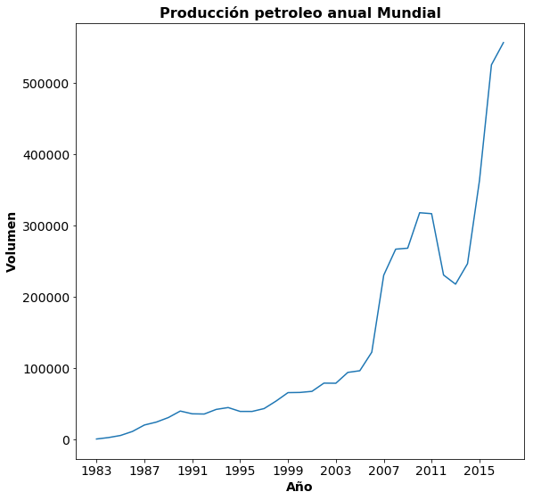
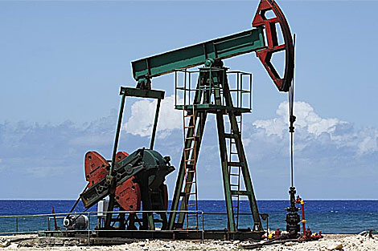
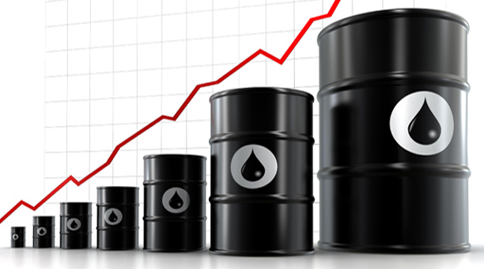
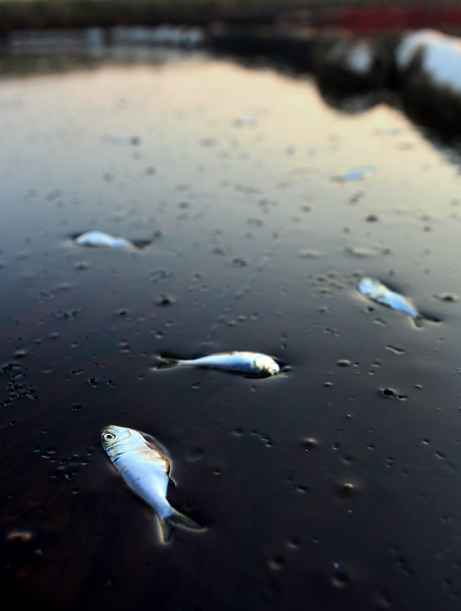

PRODUCCION DEL PETROLEO

EN QUE CONSISTE LA PRODUCCION DEL PETROLEO
El petróleo crudo entrampado en el subsuelo está asociado a gas y agua, y se mantiene allí bajo presión.
Después de realizada la perforación se pone el pozo en producción, el nivel de presión en el reservorio determina según los caudales de petróleo extraído- hasta cuando el petróleo llegará sin ayuda alguna a la superficie.
Si las presiones son altas, el petróleo es forzado a desplazarse hacia el fondo del pozo y fluye hacia arriba. Lo hace a través de una cañería de producción ("tubing"), de 5 a 10 centímetros de diámetro, que se baja cuando termina la perforación y se instala adecuadamente.
La tubería queda unida a la cañería de entubación ("tubing") por empaquetaduras especiales ("packer") que a veces sirven también para aislar distintas capas productoras.

TIPOS DE PETROLEO
Son miles los compuestos químicos que constituyen el petróleo, y, entre muchas otras propiedades, estos compuestos se diferencian por su volatilidad (dependiendo de la temperatura de ebullición). Al calentarse el petróleo, se evaporan preferentemente los compuestos ligeros (de estructura química sencilla y bajo peso molecular), de tal manera que conforme aumenta la temperatura, los componentes más pesados van incorporándose al vapor. Las curvas de destilación TBP (del inglés "true boiling point", temperatura de ebullición real) distinguen a los diferentes tipos de petróleo y definen los rendimientos que se pueden obtener de los productos por separación directa.
La industria mundial de hidrocarburos líquidos clasifica el petróleo de acuerdo a su densidad API (parámetro internacional del Instituto Americano del Petróleo, que diferencia las calidades del crudo).
Aceite Crudo
Densidad
grados API
Extrapesado
Pesado
Mediano
Ligero
Superligero

CONTAMINACION DEVIDO AL PETROLEO
La contaminación por petróleo se produce por su liberación accidental o intencionada en el ambiente, provocando efectos adversos sobre el hombre o sobre el medio, directa o indirectamente.
La contaminación involucra todas las operaciones relacionadas con la explotación y transporte de hidrocarburos, que conducen inevitablemente al deterioro gradual del ambiente. Afecta en forma directa al suelo, agua, aire, y a la fauna y la flora.

ENLACES DE JUEGOS
Juegos Dinamicos
ENLACE DE APOYO
EL PETROLEO